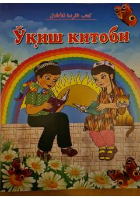

OKArab tili tovushlari va grammatikasining asoslarini o'rgatuvchi o'quv qo'llanma.
Ushbu kitob arab tilini o'rganish uchun mo'ljallangan bo'lib, harflarning qisqa va cho'ziq talaffuzi, sukun va tashdid qoidalari hamda muzakkar va muannas so'zlarni farqlashni o'rgatadi. Shuningdek, boshlang'ich lug'at boyligi va amaliy mashqlarni o'z ichiga oladi.